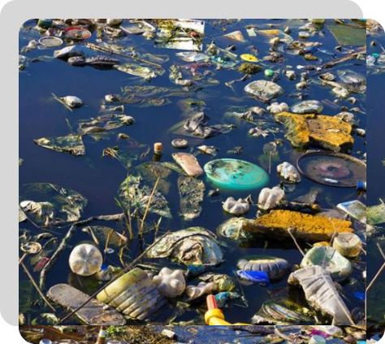

Kamu Harus Tau!
Apa sih Filtrasi Air?
Filtrasi air adalah suatu proses pemisahan zat padat, partikel, atau mikroorganisme dari air
untuk menghasilkan air yang lebih bersih dan aman untuk dikonsumsi atau digunakan. Prinsip
dasar filtrasi adalah memanfaatkan media atau perangkat tertentu untuk menyaring atau
menangkap zat-zat yang tidak diinginkan dari air.
Penting untuk memahami bahwa air yang masuk ke dalam sistem penyediaan air bersumber dari berbagai sumber, termasuk sungai, danau, atau sumur, dan sering kali mengandung berbagai pencemar. Oleh karena itu, filtrasi air menjadi langkah kritis dalam upaya menjaga kesehatan manusia dan lingkungan.
Penting untuk memahami bahwa air yang masuk ke dalam sistem penyediaan air bersumber dari berbagai sumber, termasuk sungai, danau, atau sumur, dan sering kali mengandung berbagai pencemar. Oleh karena itu, filtrasi air menjadi langkah kritis dalam upaya menjaga kesehatan manusia dan lingkungan.

Kamu Harus Tau!
Konsep Filtrasi
Proses filtrasi dasar melibatkan media filtrasi atau perangkat tertentu yang bertugas menyaring
air dan menghilangkan zat-zat yang tidak diinginkan. Media filtrasi umumnya memiliki pori-pori
atau celah yang memungkinkan air melewati sementara menahan partikel atau mikroorganisme yang
lebih besar. Lebih jelasnya ada di video ini.

Kamu Harus Tau!
Apa itu Pencemar Air?
Pencemar air merujuk pada substansi atau zat yang hadir dalam air, baik dalam bentuk cairan
atau partikel, yang dapat menyebabkan perubahan atau kerusakan pada kualitas air. Pencemar
air dapat berasal dari berbagai sumber, termasuk aktivitas manusia, proses alami, atau
campuran keduanya. Pencemaran air menjadi perhatian serius karena dapat mengancam kesehatan
manusia, lingkungan, dan ekosistem perairan.
01 Biologis
Bakteri, Virus, dan Mikroorganisme:
Organisme mikroskopis yang dapat menyebabkan penyakit dan infeksi pada manusia. Filtrasi air berperan dalam menghilangkan atau mengurangi jumlah mikroorganisme ini.
Organisme mikroskopis yang dapat menyebabkan penyakit dan infeksi pada manusia. Filtrasi air berperan dalam menghilangkan atau mengurangi jumlah mikroorganisme ini.
02 Kimia
Logam Berat:
Termasuk merkuri, timbal, dan arsenik. Logam berat dapat memiliki dampak kesehatan yang serius dan harus dihilangkan dari air.
Logam Berat:
Termasuk merkuri, timbal, dan arsenik. Logam berat dapat memiliki dampak kesehatan yang serius dan harus dihilangkan dari air.
Termasuk merkuri, timbal, dan arsenik. Logam berat dapat memiliki dampak kesehatan yang serius dan harus dihilangkan dari air.
Logam Berat:
Termasuk merkuri, timbal, dan arsenik. Logam berat dapat memiliki dampak kesehatan yang serius dan harus dihilangkan dari air.
03 Fisik
Partikel dan Zat Padat
Termasuk tanah, pasir, dan debu yang dapat terbawa oleh aliran air. Filtrasi bertujuan untuk menghilangkan partikel-partikel ini dari air.
Termasuk tanah, pasir, dan debu yang dapat terbawa oleh aliran air. Filtrasi bertujuan untuk menghilangkan partikel-partikel ini dari air.